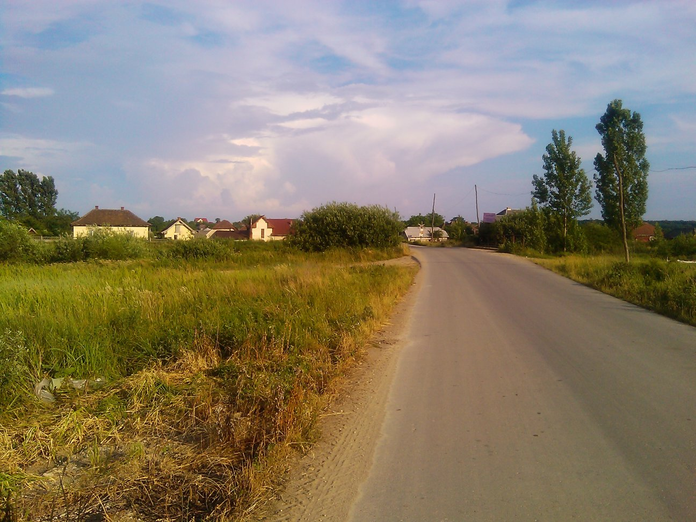
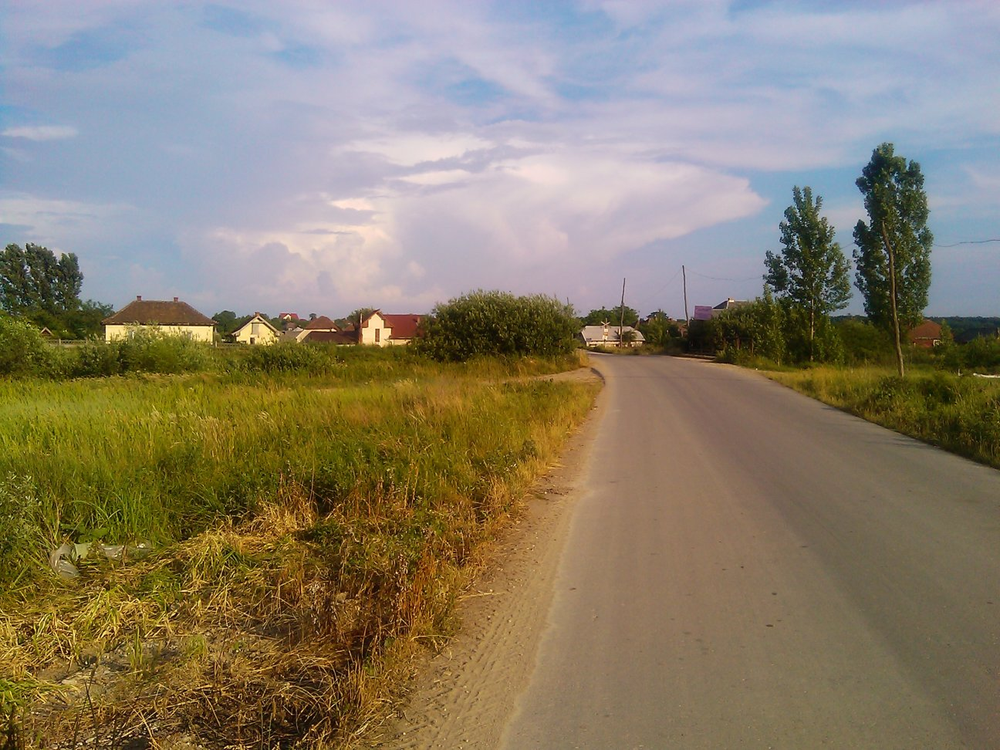

Contact
My name is Călin Ardelean and I currently live in northern Transylvania. I like my Haskell raw and my bike rolling.
Contact me on calinucs@gmail.com for any inquiry.
My name is Călin Ardelean and I currently live in northern Transylvania. I like my Haskell raw and my bike rolling.
Contact me on calinucs@gmail.com for any inquiry.